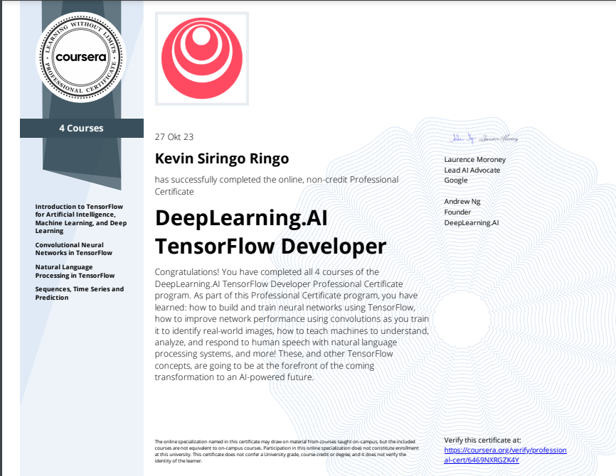
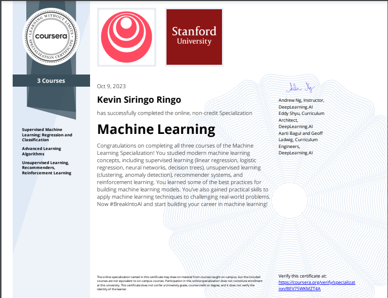
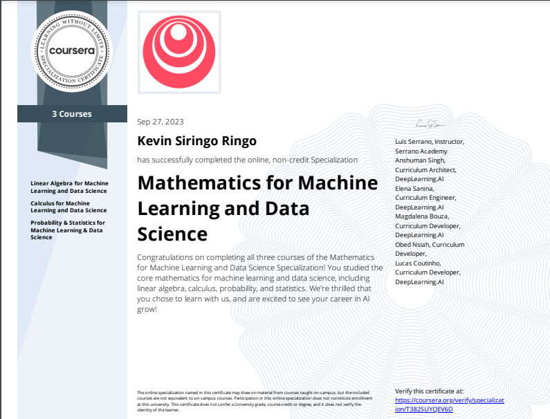

Bangkit Academy
Machine Learning Cohort with applied training across ML fundamentals and project delivery.
Computer Vision | Model Training | AI Research
I build, train, and evaluate machine learning models for real-world vision problems. Saat ini fokusku ada di eksperimen AI, computer vision, dan model training.
Evidence snapshot
Existing achievements are reframed into proof points for AI Engineering and research potential.
Machine Learning Cohort with applied training across ML fundamentals and project delivery.
Intellectual property recognition for tomato disease detection research with deep learning.
PKM-KC and InnoVillage support for disease detection, automatic detection, and smart farming work.
TensorFlow, Machine Learning, and Mathematics for Machine Learning specializations.
Research projects
Current project content is kept, but the presentation now emphasizes technical relevance and research value.

Featured computer vision project
An Android application using machine learning to detect tomato plant diseases. The project connects model training, computer vision inference, and mobile deployment.
View app listing
AI research
Funded social project through InnoVillage 2023, focused on automatic detection for smart farming use cases.
Case study soon
Web system
An information system website for Pakkat Village, built to organize public-facing village information.
Demo unavailable
Web commerce
An e-commerce website concept for healthy juice products using activated charcoal.
Archived projectCapabilities
The skill system is grouped for fast recruiter scanning and stronger alignment with AI roles.
Journey
Older school history is de-emphasized so the timeline supports current AI Engineering goals.
Formal engineering background while building applied AI, computer vision, and software projects.
Completed ML-focused learning path and applied project work through Bangkit Academy.
Received support through PKM-KC and InnoVillage for tomato disease detection and smart farming research.
Earned HKI recognition for tomato disease detection work and Runner Up II at ITCC 2023 business idea competition.
Certifications
Certificate screenshots are visible directly, without a carousel hiding the evidence.

TensorFlow, computer vision, NLP, sequences, time series, and prediction.
Verify certificate
Supervised learning, advanced algorithms, unsupervised learning, recommenders, and reinforcement learning.
Verify certificate
Linear algebra, calculus, probability, and statistics for ML and data science.
Verify certificateContact
For recruiters and hiring teams, the fastest paths are CV, LinkedIn, and email. This site keeps contact focused on professional channels.